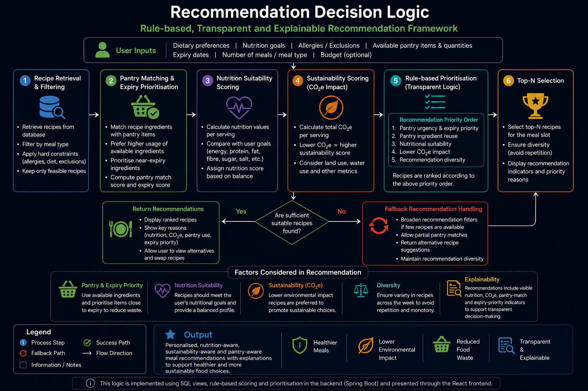

Weekly Meal Planning
Generate structured breakfast, lunch and dinner plans.

A full‑stack web application integrating nutritional analysis, CO₂e sustainability indicators, pantry‑aware ingredient reuse and expiry‑date prioritisation into a transparent rule‑based recommendation framework for UK university students.
BSc (Hons) Computing Dissertation · Arden University · 2026
A walkthrough of weekly meal planning, pantry-aware prioritisation, sustainability indicators, recommendation explainability and dynamic pantry deduction.
A concise summary of the artefact’s purpose and academic contribution.
The Sustainable Nutrition Recommendation System is a full-stack web application developed to support healthier and more sustainable meal-planning behaviour for UK university students. The framework combines nutritional analysis, environmental sustainability indicators, pantry management and food-waste reduction within a transparent rule-based recommendation system implemented using React.js, Spring Boot, MySQL and Python preprocessing.
Core functionality implemented in the artefact.
Overview of the layered architecture, preprocessing workflow, relational database structure and transparent recommendation logic.
The artefact follows a layered architecture where Python preprocessing prepares nutritional, recipe and sustainability datasets, MySQL analytical views support recommendation processing, Spring Boot exposes REST APIs, and the React frontend presents recommendation results through an interactive user interface.
Python Preprocessing
↓
MySQL Relational Database
↓
SQL Analytical Views
↓
Spring Boot REST APIs
↓
React Frontend Interface



Visual overview of the working artefact.


High‑level instructions for running the system.
Java 17+, Node.js, MySQL, Python 3+
cd backend mvn spring-boot:run
cd frontend npm install npm run dev
Frontend: http://localhost:5173 Backend: http://localhost:8080
The complete implementation repository is private and can be made available to examiners upon request.
Request Repository Access